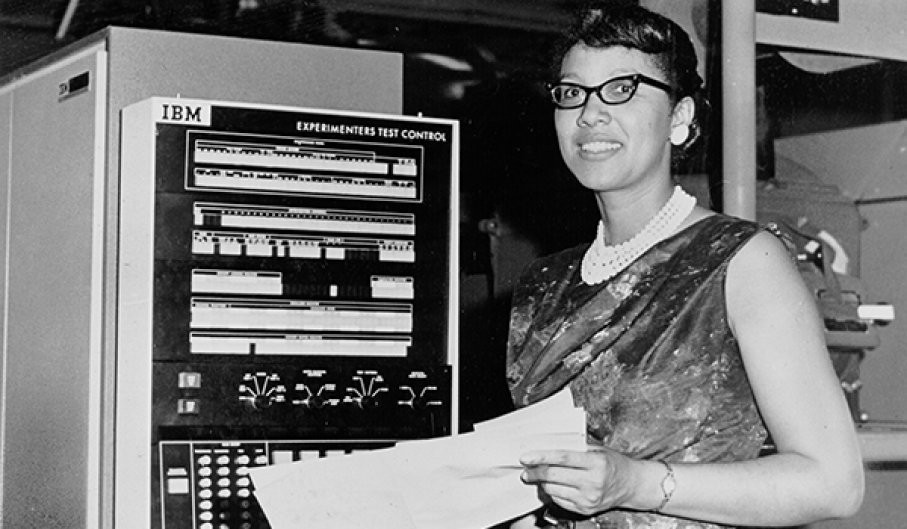

Quem foi Dorothy Vaughan: a primeira supervisora negra na história da NASA
Dorothy Vaughan (20/09/1910 – 10/11/2008) foi uma das mais brilhantes mentes americanas na corrida espacial. Mesmo vivendo numa época onde o racismo era explícito nos Estados Unidos, ela fez a diferença e foi uma das pioneiras na introdução dos computadores para cálculos de rota nos projetos da NASA. Leia mais...
Mulheres negras na ciência brasileira
No Brasil, de acordo com o Instituto Brasileiro de Geografia e Estatística (IBGE), 28% da população é autodeclarada de mulheres negras, grupo que reúne pretas e pardas, o que correspondem a metade dos negros do país (56%) e, desse grupo, apenas 10,4% concluem o ensino superior. Leia mais...
Uma conversa séria sobre Mulheres Negras na Computação e tecnologias

A questão da inclusão de mulheres na Computação e tecnologias só faz sentido se como “mulheres” forem consideradas, realmente, TODAS as mulheres, dos mais diversos perfis identitários, étnico-raciais, etários, de classe, de sexualidade etc. No entanto, a interseccionalidade desta discussão nem sempre acontece, o que chama a atenção, principalmente, ao analisar o aspecto racial, tendo em vista que as mulheres negras representam 27% da população brasileira. Leia mais...
O muro permanece alto para mulheres negras
Em 2012, Paloma Calado tinha 17 anos e decidiu que queria fazer faculdade de ciência da computação. Ela bolou um plano: cursar o último ano do ensino médio de manhã, dois cursos profissionalizantes à tarde e fazer o pré-vestibular à noite, no Centro de Educação do Complexo da Maré, na Zona Norte do Rio de Janeiro, onde mora. A ideia era passar na faculdade, mas, caso não conseguisse, entraria no mercado de trabalho.‘‘Graças a Deus deu certo, fui aprovada em três universidades’’, conta. Leia mais...